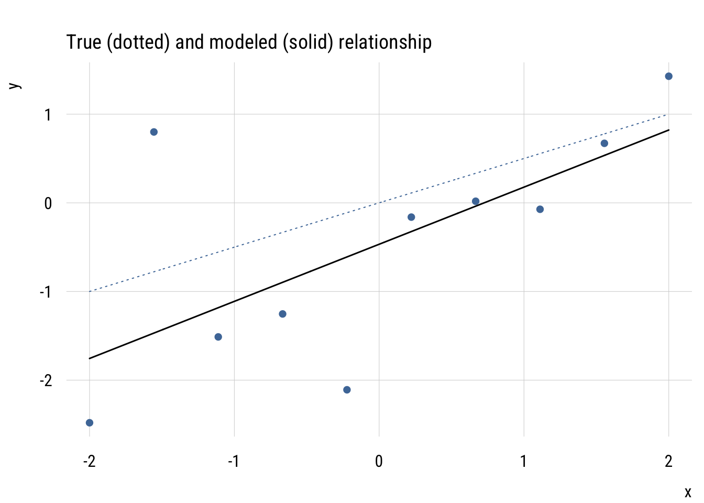
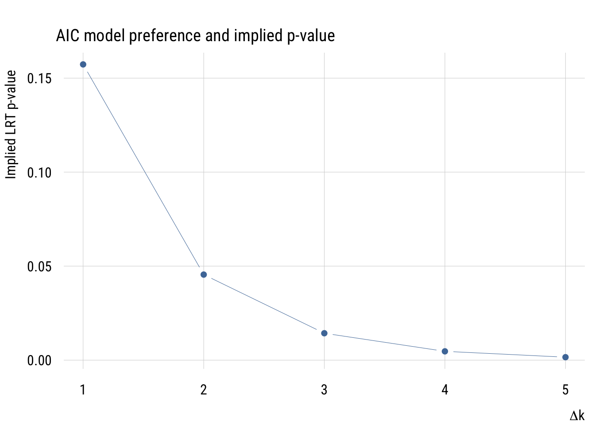
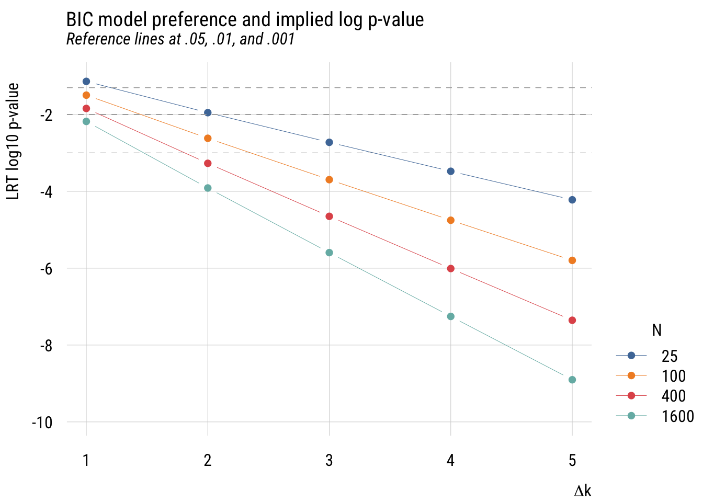

library(dplyr)
library(tidyr)
library(broom)
library(stringr)
library(modelsummary)
library(tinyplot)
tinytheme("ipsum",
family = "Roboto Condensed",
palette.qualitative = "Tableau 10",
palette.sequential = "agSunset")Information criteria*
Goals
As we’ve seen so far, one of the problems in choosing a model is that more complicated models will always get at least a little closer to the data. So we can’t simply choose the model with the lowest RSS or deviance. This is the core problem of model selection
All of the approaches we’ve seen so far (i.e., \(t\)-test, \(F\)-test, likelihood ratio test) control the Type I error rate, or probability of a false positive. That is, they limit the probability we claim something is true when it actually isn’t. This is the meaning of setting an \(\alpha\) to, say, .05.
In this section, we’re going to look at approaches to model selection that are not based on null hypothesis significance testing.
Set up
AIC
The AIC or Akaike’s Information Criterion is not a null hypothesis test in the way that, say, the likelihood ratio test is. It’s rather a way of evaluating which of two models would do a better job predicting a different dataset that was created by the same data-generating process. The formula is:
\[\text{AIC} = D + 2k\]
where \(D\) is the deviance and \(k\) is the number of estimated parameters (e.g., 3 for a simple regression).
The AIC decision rule is that we should, when comparing two models, take the model with the lower AIC of the two. In practice, it’s really that simple. But let’s talk about why.
The logic is that we want \(D\) to go down, but not at the expense of adding a bunch of junk parameters. So there’s a penalty for adding additional betas. Adding a new parameter needs to make the deviance go down by at least 2 for the model to be considered better.
Consider the following data, which is based on this model:
\[\begin{align} Y_i &\sim \mathcal{N}(\mu_i, 1) \\ \mu_i &= 0 + .5X_i \end{align}\]
Now let’s look at a finite draw from this process.
Show code
set.seed(12)
# X where N = 10
x <- seq(from = -2,
to = 2,
length = 10)
# Y generated by the "true process"
y <- .5*x + rnorm(n = 10,
mean = 0,
sd = 1)
# fit the regression on 10 cases
fit <- lm(y ~ x)
# get a higher resolution X dataset for drawing lines
newdata = data.frame(x = seq(-2, 2, length = 1000))
# add the true value for reference
newdata$true <- newdata$x * .5
# add the first prediction
newdata$y <- predict(fit,
newdata = newdata)
# here's the initial plot
plt(y ~ x,
type = "p",
main = "True (dotted) and modeled (solid) relationship")
plt_add(true ~ x,
data = newdata,
type = "l",
lw = 1,
lty = 3,
color = "darkgray")
plt_add(y ~ x,
data = newdata,
type = "l",
lw = 1.5,
col = palette("Tableau 10")[1])
I have drawn the data and the fitted regression line, which, of course, isn’t exactly the same as the actual data generating process. The estimated regression line consistently underestimates the true value of \(Y_i\) that would come from the true model.
We want to do better if we can, so maybe we should make the model more complicated? Here’s us trying to use more and more complex models (i.e., higher degree polynomials) to improve the fit.
Show code
# add all the predictions to the new dataframe for drawing
newdata$y2 <- predict(lm(y ~ poly(x, 2)),
newdata = newdata)
newdata$y3 <- predict(lm(y ~ poly(x, 3)),
newdata = newdata)
newdata$y4 <- predict(lm(y ~ poly(x, 4)),
newdata = newdata)
newdata$y5 <- predict(lm(y ~ poly(x, 5)),
newdata = newdata)
# plot with up to 5th degree polynomial
plt(y ~ x,
type = "p",
main = "Modeling Y with polynomials")
plt_add(true ~ x,
data = newdata,
type = "l",
lw = 1,
lty = 3,
color = "darkgray")
plt_add(y ~ x,
data = newdata,
type = "l",
lw = 1.5,
col = palette("Tableau 10")[1])
plt_add(y2 ~ x,
data = newdata,
type = "l",
lw = 1.5,
col = palette("Tableau 10")[3])
plt_add(y3 ~ x,
data = newdata,
type = "l",
lw = 1.5,
col = palette("Tableau 10")[4])
plt_add(y4 ~ x,
data = newdata,
type = "l",
lw = 1.5,
col = palette("Tableau 10")[5])
plt_add(y5 ~ x,
data = newdata,
type = "l",
lw = 1.5,
col = palette("Tableau 10")[6])
The polynomials end up “chasing” weird data points in ways that actually make our true understanding worse. This is called overfitting and it’s the main reason we don’t want to make models too complicated.
OK so the number “2” in the AIC formula isn’t arbitrary. It’s because adding extra parameters is expected to make the deviance worse out of sample at precisely the rate of two per “extra” parameter.
Here’s a simulation based on one in Richard McElreath’s Statistical Rethinking. The steps are:
Draw a sample of size N from a known process (the same as the model above); call this the training set.
Estimate a series of regression models on the training set, ranging from a linear model to a 5th degree polynomial.
Assess how well these models predict another data set of the same N drawn from the same process.
Here are the results for two situations, N = 20 and N = 100 (not that it matters).
Show code
# function to compare deviances
get_tt_devs <- function(n, b0, b1, s, k) {
x <- seq(-2, 2, length = n)
y <- b0 + b1*x + rnorm(n, 0, s)
fit <- lm(y ~ poly(x, k))
ll_train <- as.numeric(-2 * logLik(fit))
test_y <- b0 + b1*x + rnorm(n, 0, s)
pred_y <- predict(fit)
test_fit <- lm(test_y ~ pred_y)
ll_test <- as.numeric(-2 * logLik(test_fit))
tibble::tibble(
train = ll_train,
test = ll_test)
}
# keep it replicable
set.seed(1234)
# set up the testing grid
mysims <- expand_grid(
simnum = 1:1000,
k = 1:5,
n = c(20, 100)
)
# do the simulations
mysims <- mysims |>
rowwise() |>
mutate(outs = list(get_tt_devs(
n = n, b0 = 0, b1 = .5, s = 1, k = k))) |>
unnest_wider(outs) |>
group_by(k, n) |>
summarize(
across(
c(train, test),
list(mean = mean, sd = sd),
.names = "{.col}_{.fn}"),
.groups = "drop") |>
pivot_longer(
cols = -c(k, n),
names_to = c("sample", ".value"),
names_sep = "_") |>
mutate(ymax = mean + sd/sqrt(n),
ymin = mean - sd/sqrt(n),
nfac = ordered(n, labels = c("n = 20", "n = 100")))
# plot it
plt(mean ~ k | sample,
data = mysims,
ymin = ymin,
ymax = ymax,
type = type_pointrange(dodge = .01),
main = "In- and out-of-sample deviance",
ylab = "Deviance",
xlab = "# of betas (true model = 1)",
facet = nfac,
facet.args = list(free = TRUE))
This graph shows how this works for the two sample sizes. As you can see, increasingly complex models do an increasingly good job of fitting the training (in-sample) data but do an increasingly bad job of fitting the test (out-of-sample) data. In fact, the deviance difference is 2 per excess parameter! This is why the AIC’s penalty is \(2k\).
OK, here’s the last thing about AIC. If we’re considering two models, one more complicated and one less complicated, we can think about the implied p-value of the comparison. That is, we can ask what the p-value would be to make the same decision of rejecting the simpler model.
Show code
aic_to_p <- tibble(
delta_k = 1:5,
p = 2 * (1 - pnorm(sqrt(2 * delta_k)))
)
plt(p ~ delta_k,
data = aic_to_p,
type = "b",
main = "AIC model preference and implied p-value",
ylab = "Implied LRT p-value",
xlab = expression(Delta * "k"))
As we see here, the implied p-value for a one-parameter comparison is much more “liberal” than any p-value that one would choose.
BIC
The BIC or Bayesian Information Criterion is like the AIC, but different1. In practice, it’s basically the same as the AIC albeit with a larger penalty term and used in the same way.
1 The statistical motivations are quite different but I’ve written way too much for this “extra” section already. See the Raferty paper I reference below.
\[\text{BIC} = D + k\log n \]
Whereas the AIC always has a penalty term of two times the number of parameters, the BIC has a penalty term that’s the natural log of the sample size times the number of parameters. So for a regression on a model with N = 300, adding an additional parameter would have to decrease the deviance by more than 5.7 for that to be considered an improvement.
Here are the implicit p-values implied by the “take the lower” BIC decision rule.
Show code
bic_to_p <- expand_grid(
delta_k = 1:5,
n = c(25, 100, 400, 1600)) |>
rowwise() |>
mutate(p = 2 * (1 - pnorm(sqrt(log(n) * delta_k))),
logp = log10(p))
plt(p ~ delta_k | factor(n),
data = bic_to_p,
type = "b",
main = "BIC model preference and implied p-value",
sub = "Reference lines at .05 and .01",
ylab = "LRT p-value",
ylim = c(0, .08),
xlab = expression(Delta * "k"),
legend = list("bottomright!", title = "N"))
plt_add(type = type_hline(h = .05), lty = 2, col = "darkgray")
plt_add(type = type_hline(h = .01), lty = 2, col = "darkgray")
This is more complicated than the AIC graph because the results depend on the sample size. But in any case, you can see that the implied p-values are much stricter.
We can make this a little easier to see by looking at the same information with base-10 log p-value on the y-axis.
Show code
plt(logp ~ delta_k | factor(n),
data = bic_to_p,
type = "b",
main = "BIC model preference and implied log p-value",
sub = "Reference lines at .05, .01, and .001",
ylab = "LRT log10 p-value",
xlab = expression(Delta * "k"),
ylim = c(-10, -1),
legend = list("bottomright!", title = "N"))
plt_add(type = type_hline(h = log10(.05)), lty = 2, col = "darkgray")
plt_add(type = type_hline(h = log10(.01)), lty = 2, col = "darkgray")
plt_add(type = type_hline(h = log10(.001)), lty = 2, col = "darkgray")
In any case, it’s easy to see that using the BIC as a model selection decision rule is functionally equivalent to choosing a much smaller \(\alpha\) level than in conventional in social science. For that reason, I think it’s a good choice for self-discipline.
If you want to know more, see Adrian Raftery’s classic paper Bayesian Model Selection in Social Research.